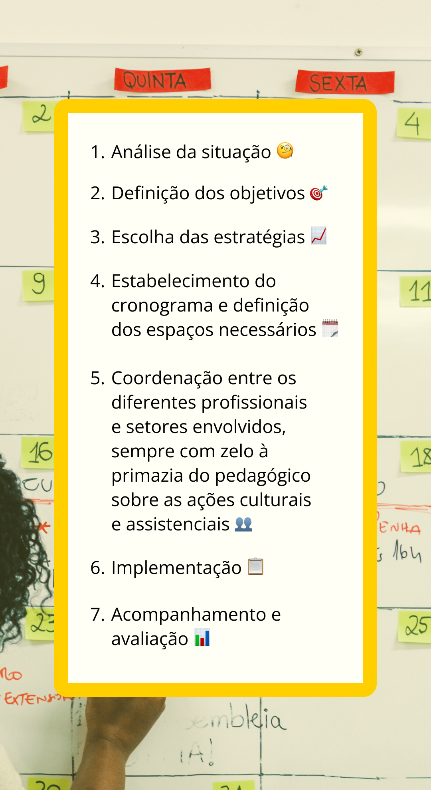

Plano de Desenvolvimento Institucional
O Plano de Desenvolvimento Institucional (PDI), primeiro instrumento de gestão na EPT, é uma importante ferramenta para o desenvolvimento do planejamento institucional das organizações de ensino que têm as dimensões de oferta de ensino, pesquisa e extensão. Ao englobar elementos que influenciam a melhoria da qualidade do ensino, na uniformidade das tarefas administrativas e na gestão financeira eficiente, o PDI colabora para os objetivos de e transparência pública. Este instrumento possibilita, ainda, um diagnóstico sistêmico e as bases para reflexão, formulação, implementação e gestão dos planos de ação fomentadores do desenvolvimento integral pertinentes para o horizonte futuro estabelecido, como afirmam Tomás Dias Sant’ana et al (2017).
O PDI de uma instituição de EPT parte da sua historicidade e planeja suas metas para o futuro. Com base em diagnósticos de sua realidade, ele elabora um planejamento social e democrático para um determinado tempo. Este instrumento de gestão planeja a instituição que o coletivo quer e estabelece metas que servirão para o desenvolvimento de planos anuais de gestão, bem como para avaliação e acompanhamento de tal planejamento.
Para isso, quanto mais participação na elaboração do PDI, melhor é. Quanto mais a gestão da instituição envolver a comunidade, mais esse documento representará os sujeitos e os rumos da instituição. A direção geral e a direção administrativa são as responsáveis por liderar o processo de construção do PDI, mas precisarão criar estratégias de maior participação possível, promovendo, pela elaboração desse instrumento, o pertencimento, o conhecimento das necessidades e o envolvimento com o trabalho na EPT. Sua elaboração é um evento importante na gestão da EPT e seus gestores precisam incentivá-la e mobilizá-la, assim como utilizar o PDI para o desenvolvimento de políticas institucionais e para a avaliação constante da própria instituição, ou seja, a avaliação da instituição que se tem e da instituição que se quer.
Cabe também a compreensão dos servidores sobre a importância da participação, construção e acompanhamento desse documento norteador da gestão. A elaboração do documento é um espaço fundamental de disputa de políticas e de metas para uma instituição a serviço da classe trabalhadora. Eis aí o desafio de garantia de políticas inclusivas e emancipatórias na gestão e no ensino da EPT.
Portanto, o PDI não deve ser apenas um documento disponível na página das instituições para pesquisa, mas sim um instrumento de gestão, de planejamento e de avaliação das metas e desafios da instituição.
Para a organização e elaboração do PDI, é importante olhar para a legislação e para as experiências de outras instituições, tendo o fundamento da maior participação possível da comunidade institucional. Muitas instituições formam comissões para elaborar o PDI, embora isso possa ser uma prática comum, é essencial criar mecanismos que envolvam o maior número possível de representantes ou até toda a comunidade acadêmica, pois é um processo fundamental.
Para saber mais sobre PDI, planejamento, avaliação das metas e desafios a partir das vivências de instituições de ensino, vale conhecer as experiências da Universidade Federal de Santa Maria (UFSM) e do Instituto Federal do Rio Grande do Norte (IFRN) com seus respectivos PDIs:
- A UFSM, que possui duas escolas vinculadas à universidade, estrutura seu PDI em sete desafios estratégicos, os quais: internacionalização; educação inovadora e transformadora com excelência acadêmica; inclusão social; inovação, geração de conhecimento e transferência de tecnologias; modernização e desenvolvimento organizacional; desenvolvimento local, regional e nacional; e gestão ambiental. Além disso, o PDI 2016-2026 apresenta as Diretrizes das Políticas Institucionais, abrangendo áreas como planejamento e avaliação institucional; governança, controle interno e gestão de riscos; organização administrativa; gestão de pessoas; gestão orçamentária; tecnologia de informação; assistência estudantil; infraestrutura; gestão ambiental; comunicação; acessibilidade; inovação, empreendedorismo e transferência de tecnologias. Para saber mais, acesso o Plano de Desenvolvimento Institucional da Universidade Federal de Santa Maria.
- O IFRN desenvolve seu PDI por meio de um processo de construção coletiva. Sua elaboração envolve a participação ativa de diferentes segmentos da instituição e da sociedade, reunindo contribuições e incorporando novas estratégias. Entre elas, destaca-se a utilização do Balanced Scorecard (BSC), uma ferramenta que permite visualizar de forma integrada os objetivos que o IFRN pretende alcançar ao longo dos oito anos de vigência do plano, garantindo a concretização de sua missão institucional. Com isso, o planejamento se organiza a partir de projetos estratégicos, estruturados em atividades, etapas e setores responsáveis, assegurando a execução alinhada dos objetivos estabelecidos. Acesso o portal sobre Planejamento e o Plano de Desenvolvimento Institucional (2019 - 2026) do Instituto Federal do Rio Grande do Norte.
Plano Político-Pedagógico
Ilma Veiga (1995) aponta que o segundo instrumento, o Plano Político-Pedagógico (PPP), é entendido como a estruturação integral do trabalho pedagógico na escola, como um planejamento geral do futuro, partindo da instituição que se tem para a instituição que se quer. A instituição de EPT é o lugar de concepção, realização e avaliação de seu projeto educativo e, por isso, precisa organizar seu trabalho pedagógico com base em seus estudantes.
Percebemos, porém, que a EPT se configura em muitos espaços como “negação do pedagógico”, como afirma Mariglei Severo Maraschin (2020), visto que não há movimentos de construção coletiva de seu PPP nem de discussão sobre o trabalho realizado.
Ao construir o PPP, planejamos o que temos intenção de fazer, de realizar. Com base no que temos, direcionamos para adiante, ou seja, antevemos um futuro diferente do presente (Veiga, 1995), buscando sempre o possível. Carmem Moreira de Castro Neves (1995) elucida que o PPP é um instrumento de trabalho que mostra o que vai ser feito, quando, de que maneira, por quem e para chegar a quais resultados. O documento deixa claro a filosofia escolar e contextualiza as diretrizes e a legislação nacional com a realidade da instituição e de seus sujeitos, valorizando a identidade e chamando para a responsabilidade, de modo a promover a participação democrática de todos.
Na construção do PPP, deve-se ter claro o que se quer fazer e os motivos para fazer, deixando de ser uma simples produção de um documento para consolidar um processo de ação-reflexão-ação que exige o esforço conjunto e a vontade política do coletivo escolar (Veiga, 2012). Um processo de ação-reflexão-ação significa uma outra forma de organização do trabalho pedagógico e supõe romper com o existente para avançar, sendo uma contínua reflexão sobre seu cotidiano. Para Moacir Gadotti (1994), todo projeto implica rupturas com o presente e traz expectativas para o futuro, uma vez que projetar é desafiar uma situação estável para arriscar-se, é enfrentar um momento de incerteza, é buscar uma nova estabilidade baseada na promessa de um estado futuro melhor que o atual. Desse modo, um projeto educativo pode ser visto como uma promessa diante de certas rupturas, que revelam os espaços de ação possíveis, com a qual se comprometem seus participantes e idealizadores. Na EPT, por exemplo, busca-se nos cursos o currículo integrado, que só pode ser implementado efetivamente com o processo contínuo de ação-reflexão-ação.
Veja abaixo um método de planejamento de um PPP, que pode ser descrito a partir das seguintes etapas:

Título: Etapas do Planejamento de um PPP
Fonte: Neves (1995).
Elaboração: Prosa (2025b).
Na maioria das realidades de educação superior ou de EPT, o PPP é um item do PDI em que constam os princípios norteadores para as atividades de ensino, de pesquisa e de extensão, seja da universidade ou de outras instituições da rede federal. Defendemos, aqui, que o PPP deve ser um instrumento de gestão do ensino em constante (re)elaboração nas instituições, pois entendemos este documento como construção contínua de ações, bem como um elemento descentralizador e democratizador do processo de tomada de decisões, além de ser o responsável por implementar o processo coletivo de avaliação de cunho emancipatório (Veiga, 1995).
Para isso, os gestores do PPP (diretores de ensino, setor pedagógico, coordenadores de curso) devem ser os responsáveis pelo ensino, mas todos os professores, os servidores e até os estudantes precisam ter o tempo e o espaço para discutir as políticas de ensino, bem como analisar constantemente como acolher e construir estratégias para o melhor ensino e aprendizagem nos diferentes cursos e modalidades de ensino.
Uma instituição de EPT que não reflete continuamente sobre seu ensino, suas propostas, suas metodologias, seu currículo e suas práticas de avaliação corre o risco de se tornar obsoleta. A falta dessa reflexão impede a instituição de compreender fatores cruciais, como os índices de evasão e a baixa procura por seus cursos. A pandemia de covid-19 evidenciou essa fragilidade: muitas instituições ficaram paralisadas e sem uma estratégia clara para adaptar o ensino ao formato remoto, revelando a importância de planejar e inovar constantemente para enfrentar desafios e manter-se relevante.
Nesse processo de reflexão e adaptação, é fundamental considerar o papel da comunidade na construção de propostas educacionais mais alinhadas às suas necessidades. No entanto, um dos desafios na EPT é justamente envolver comunidades específicas (trabalhadores rurais, quilombolas, indígenas, pescadores) e os próprios estudantes na elaboração de cursos e projetos que venham a modificar suas realidades e oportunidades de trabalho. Essa participação, no entanto, exige estratégias que promovam o envolvimento coletivo e fortaleçam o sentimento de pertencimento. Em uma interlocução com um campus de um IF, a título de exemplo, um gestor destacou como foram organizadas as regras de convivência: junto aos estudantes, foram realizadas várias etapas de reflexão sobre qual escola desejavam até chegar a dez regras de convivência. Essa experiência foi muito interessante porque um regulamento elaborado para regras e punições cedeu espaço para o diálogo, para a participação e para a construção coletiva de direitos e deveres. E, ao participarem desse processo – que durou dois anos e teve liderança estudantil em vários momentos –, os estudantes aprenderam e experienciaram a democracia.
Assim, ousamos afirmar que planejar e efetivar um projeto pedagógico próprio e coerente com a realidade é o maior e atual desafio da EPT. Por isso, torna-se fundamental olhar para outras experiências de construção coletiva, não como receitas a serem seguidas, mas como práticas a serem incentivadas e reelaboradas.
Plano de Permanência e Êxito
Por fim, o terceiro instrumento de gestão na EPT é o Plano de Permanência e Exitô (PPE), um plano institucional que contempla o diagnóstico das causas da evasão e retenção e a implementação de políticas e ações administrativas e pedagógicas, a fim de ampliar as possibilidades de permanência e êxito dos estudantes no processo educativo nas instituições, respeitando as especificidades regionais.
No contexto da EPT, este plano surgiu em atendimento à Nota Informativa nº 138/2015/DPE/DDR/SETEC/MEC, da Secretaria de Educação Profissional e Tecnológica. A nota informa e orienta as instituições da Rede Federal sobre a construção dos planos estratégicos institucionais para a permanência e êxito dos estudantes. Portanto, é uma exigência devido aos altos índices de evasão e repetência, que deve ser uma ação e um compromisso importante de diretores, coordenadores e professores.
O PPE estabelece as seguintes fases (Brasil, 2015):
- Instituição da comissão interna;
- Elaboração de diagnóstico quantitativo;
- Elaboração de diagnóstico qualitativo;
- Consolidação do plano estratégico;
- Monitoramento e avaliação das ações.
As fases de elaboração do PPE organizam-se em definição da comissão, elaboração de diagnósticos e de plano estratégico e monitoramento das ações e índices. Assim, um PPE não deve ser responsabilidade apenas da comissão, mas de todos os servidores da instituição. A comissão precisa instituir espaços de formação para diminuir os dados de evasão e construir estratégias coletivas de permanência e sucesso escolar.
O PPE, junto aos outros dois instrumentos de gestão aqui apresentados – PDI e PPP – contribuem para a gestão crítica e democrática na EPT. Estes documentos são guias importantes que orientam as práticas pedagógicas, administrativas e institucionais, e, por isso, devem ser compreendidos e vivenciados por todos os envolvidos na instituição, incluindo os estudantes, que são participantes ativos nesse processo. A seguir, apresentaremos duas estratégias de acompanhamento e desenvolvimento desses instrumentos de gestão, com o objetivo de fortalecer sua implementação e promover o engajamento de toda a comunidade acadêmica.
Para saber mais sobre o Plano de Permanência e Êxito, indicamos a leitura do Manual da Comissão de Permanência e Êxito, do Instituto Federal de Educação, Ciência e Tecnologia Sudeste de Minas Gerais.